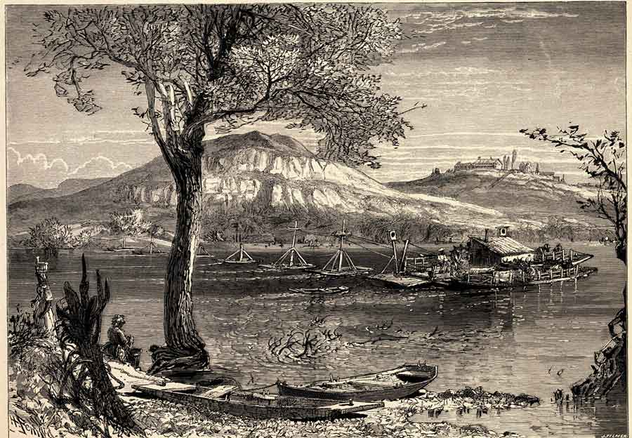

A Rich History
Chattanooga's Role in American History
Chattanooga’s history dates back to the early 19th century. Originally inhabited by Native American tribes, the area later became a vital transportation hub during the Civil War. Known as the “Gateway to the South,” the city played a significant role in the Battle of Chattanooga, which helped to secure Union victory. Many historical landmarks and Civil War sites can still be visited today, offering a glimpse into the past.
After the Civil War, Chattanooga experienced rapid industrial growth, becoming a major center for iron and steel production in the late 1800s. The city’s economy diversified over the years, and today, it’s known for its thriving tech industry, outdoor recreation, and cultural offerings. Despite its growth, Chattanooga has retained its historical charm, with well-preserved buildings and landmarks that tell the story of its transformation from a railroad town to a modern city.
